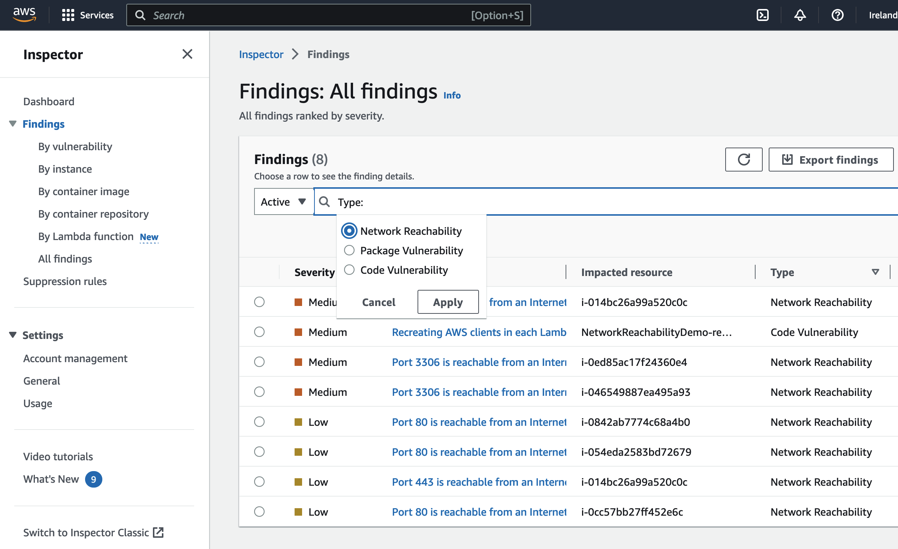
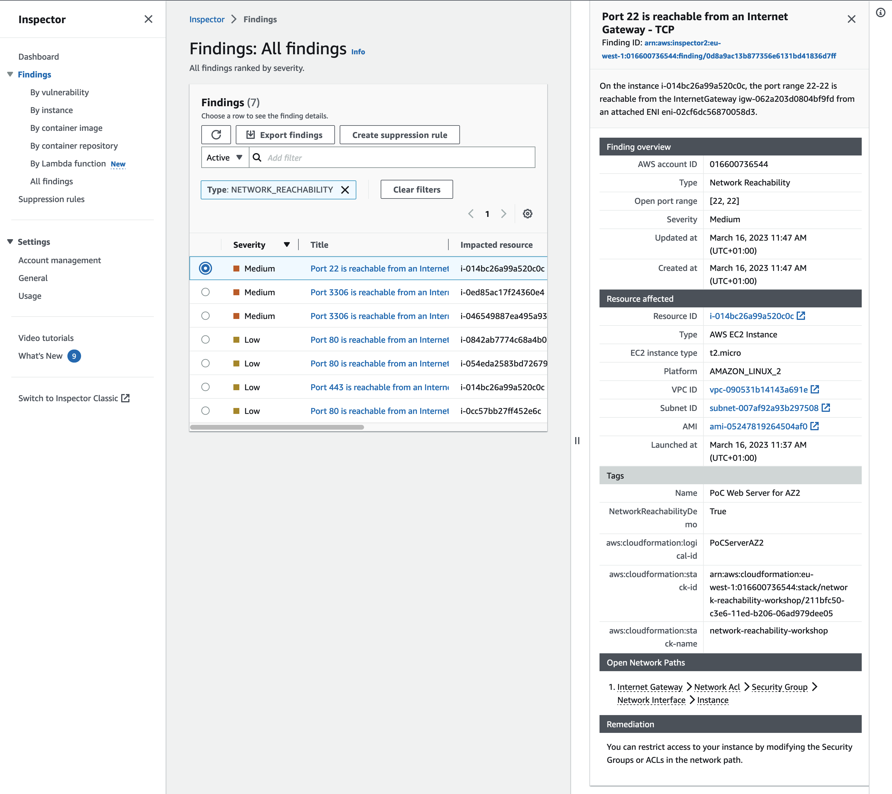
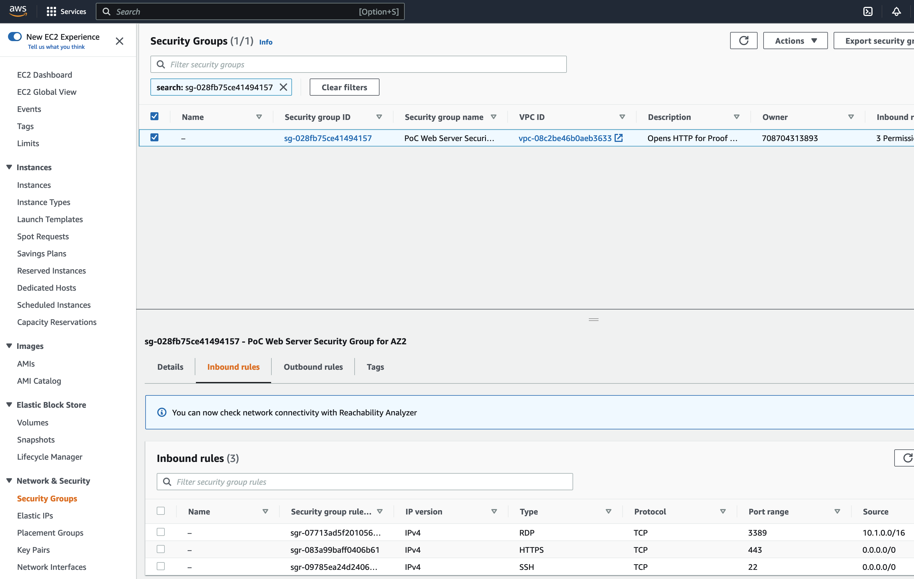
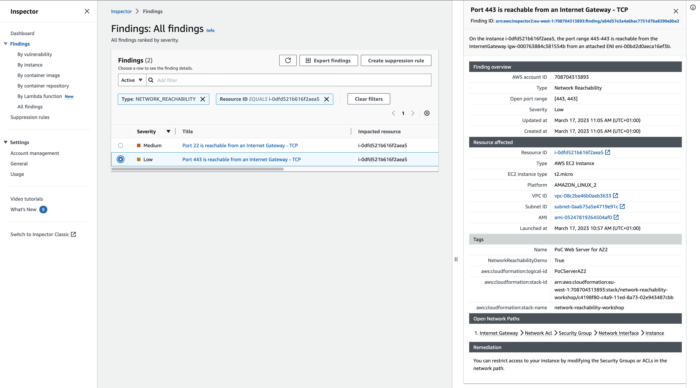
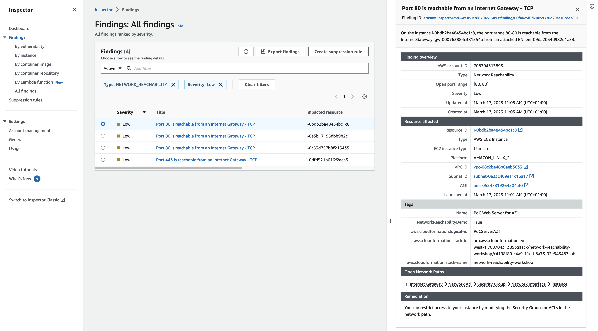
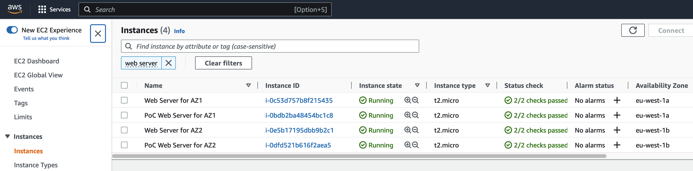
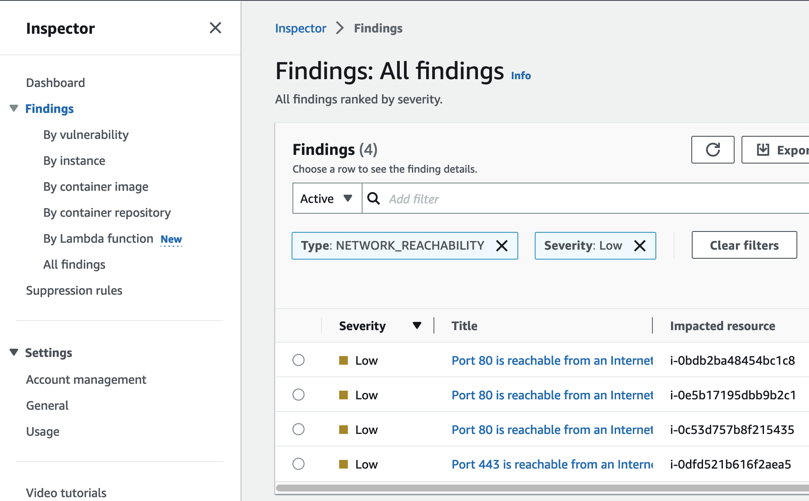
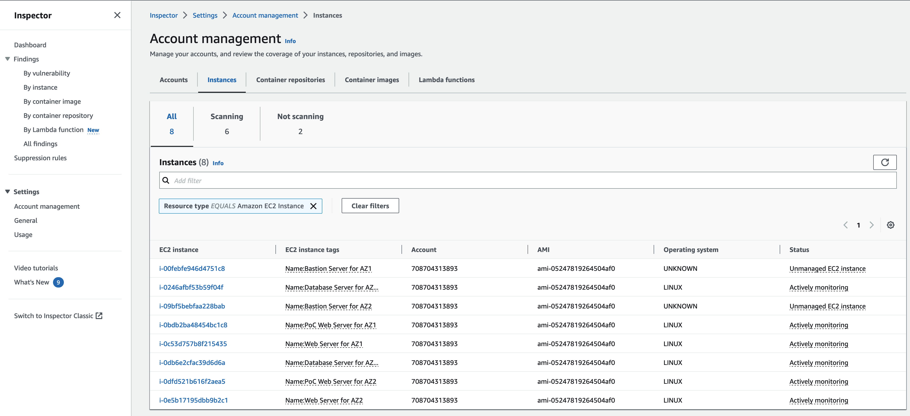
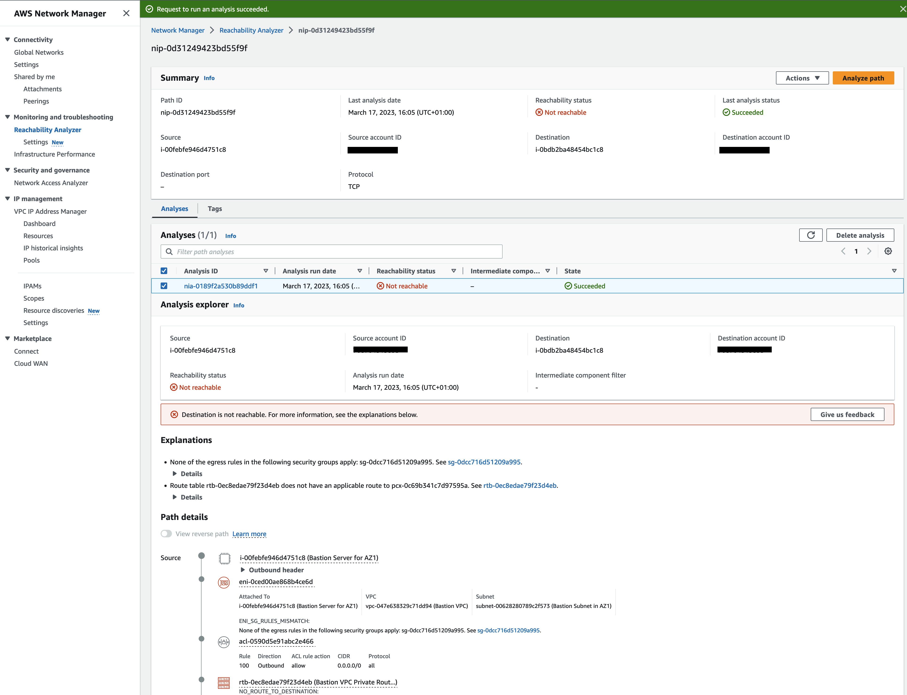

Module 3 - Evaluating Findings
In the previous module you activated Amazon Inspector. In this module you will evaluate the various findings generated by Inspector and identify potential mitigations. You will use these findings to evaluate the assumptions discussed in the start of the workshop. For reference they are:
Assumption 1. Instances in private subnets are not accessible from the internet
Assumption 2. Putting servers in different Availability zones provides both failover and better reliability
Assumption 3. Access to the servers is limited according to the principle of least privilege
Assumption 4. The bastion hosts can access all environments
Evaluating the Inspector Findings
Let's look at the Inspector Network Reachability findings and see what we can learn.
-
Go back to the Inspector console and select Findings from the navigation bar on the left.
-
Click on the Add Filter input field and filter for Type of NETWORK_REACHABILITY

To begin, you will start evaluating the higher severity findings. So let’s take a look at a Medium finding first.
-
Select the first Medium finding starting with Port 22 is reachable... by clicking the checkbox to the left of Medium

Our instance is reachable via SSH from the Internet. First, let's find out which instance that is. Click on the link for the Resource ID under Resource affected. Looking at the name this is our PoC Web Server in AZ2. We should not expose this via port 22 to the Internet.
-
How to remediate? Inspector tells us at the bottom under Remediation that we can restrict the access to our instance via the Security Group or Access Control List.
In the Open Network Paths section click on Security Group and copy the Security Group ID or simply click the blue link. Next switch to Security Groups and enter the id in the search bar.  Click on the Inbound rules which reveals that port 22 for SSH is open to the world. That means Assumption 3. Access to the servers is limited according to the principle of least privilege is wrong. This is something you would want addressed first.
So since you know some things are wrong, let’s check the other findings for this server. You do that by filtering by the instance ID.
-
Go back to Inspector and in the Findings view add another filter for Resource ID that equals your instance id (you can copy the instance id from the first finding).  There's another finding for our WebServer instance indicating that port 443 is exposed to the internet. Given we are serving a website and this is a HTTPS port the severity is low. We could put the WebServers into private subnets and only expose the LoadBalancer into the public subnet, but let's focus on understanding the other findings as well.
-
Going back to the Medium finding with port 22 being exposed to the internet let us check if other instances are affected by this as well. In the Findings view remove the filter for the instance id. Add a new filter for Open port from 22 to 22.
As we can see luckily only our WebServer for AZ2 is affected.
-
Remove the filter for the Open port and let's have a look at the other Medium findings. As we can see there are 2 instances with port 3306 reachable from the internet. Click on one of these findings and follow the link to the affected resource. As it turns out this is one of our database servers. Looking at the second finding with port 3306 being reachable from the internet shows that actually both our database servers are impacted by this. This is for sure a security concern, databases should reside in private subnets and not being accessible from the internet. So Assumption 1. Instances in private subnets are not accessible from the internet is broken as well. If the subnet would have been setup correctly (meaning no route to an Internet Gateway in the respective RouteTable) the assumption would have been correct.
-
As we looked at all the Medium findings let us now investigate the others with low severity. You can add another filter for severity low.  We already looked at the finding with port 443. However, somethings seems odd about the number of findings here. We have 4 WebServers in total, 2 in prod and 2 for our PoC. On the other hand we have 3 findings for Port 80 and one for port 443 being exposed to the internet.
-
Go to the EC2 console and filter for Web Server or simply click this link. Have a look at the Availability Zone column. We see that we have one instance of Web Server and PoC Web Server per AZ (here eu-west-1a and eu-west-1b, yours might differ).  So Assumption 2. Putting servers in different Availability zones provides both failover and better reliability seems to be valid. Is it? If there should be an event in one AZ and we want to fail over the instances have to listen on the same ports to make this work.
-
Let's go back to the Findings view of Inspector, filtering for severity low. Three instances are listening on port 80, one on port 443 (all instances ids in column Impacted resource are different for this filter).  Therefor an failover to our PoC Web Server for AZ2 would fail, breaking assumption 2.
-
Now what about Assumption 4. The bastion hosts can access all environments? Here we come back to our instance coverage of only 75%. In Inspector go to the dashboard and click on the blue 75%. The status column reveals that both of our Bastion hosts are unmanaged, meaning they are not scanned by Inspector. At this point we do not dive into why that is and how to fix it. We take it as a learning that there might be resources that we did not configure in a way to be included in the scans of Inspector. So in order to verify assumption 4 we will use a different tool.
-
You might have seen the blue banner in step 4, where we investigated a security group. It tells that we can check network connectivity with the Reachability Analyzer which is part of the AWS Network Manager. Let's pay it a visit.
-
Let us check if there is connectivity from Bastion Server for AZ1 to the Database Server for AZ1. Click on Create and analyze path. As Source type select instances and Bastion Server for AZ1. As Destination type select instances and Database Server for AZ1. Leave the rest as it is and click on Create and anapyze path. The analyzsis will take a couple of seconds.
-
You should get a success for reachability, meaning both instances can connect. Repeat step 13, this time with Source type of Bastion Server for AZ1 and destination as PoC Web Server for AZ1
-
This time Reachability Analyzer tells us that PoC Web Server for AZ1 is not reachable from Bastion Server for AZ1.  We could even look into the path details to find out the root cause of that connectivity failing. However, at this point let us conclude that Assumption 4. The bastion hosts can access all environments is proven wrong as well.
Take Aways
Thanks to the Inspector and Reachability Analyzer you were able to show that all of our assumptions had problems due to misconfigurations.
But now what? You don't want to leave these issues as they are, so let's see how to remediate them by combining other AWS tools and services. Integration and Remediation will do just that.